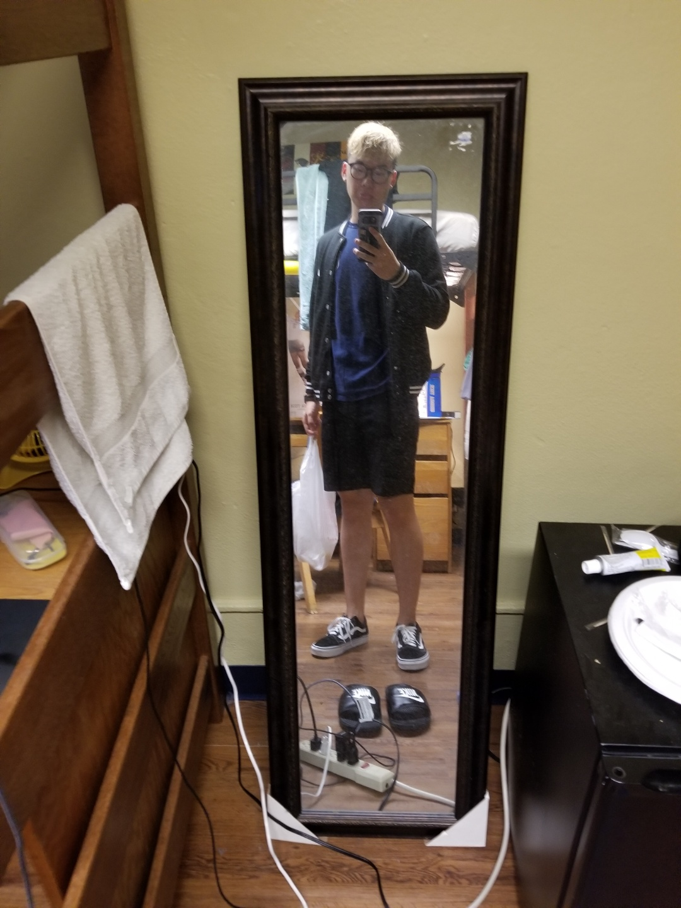
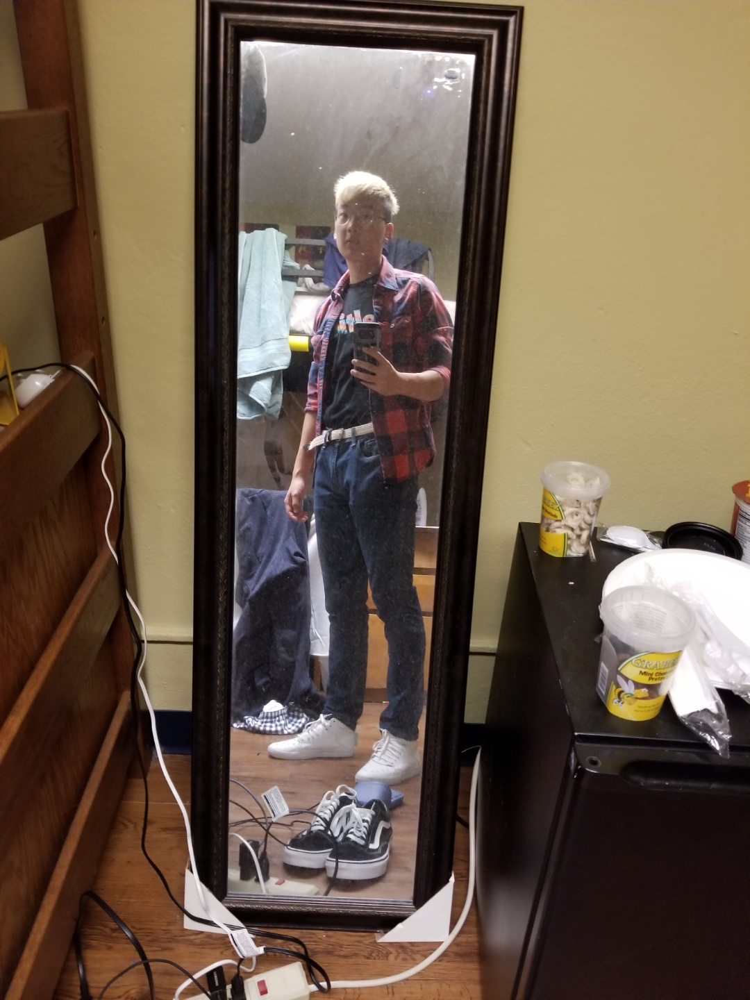
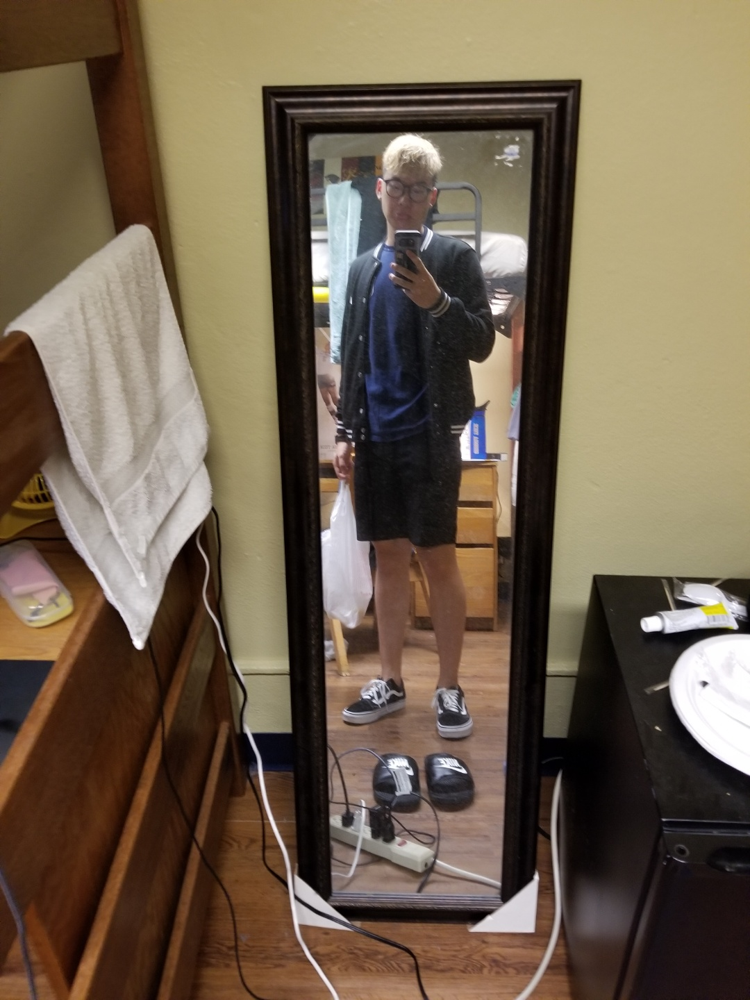
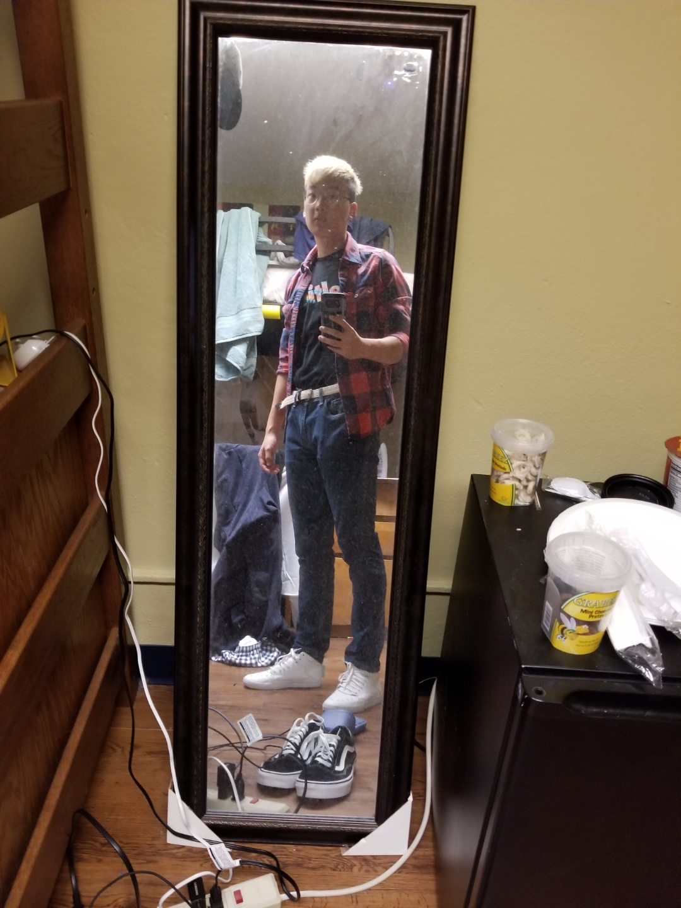

I apologize in advance for the low quality photos of my high quality fits :(
 



There's just something about fashion and seeing the way you look change from just a simple article of clothing. I believe that in the same we we change appearance from one article of clothing, one different perspective can change our outlook on life.
When we put on a mask to enter into an interview or when you're really nervous for a presentation or public speaking, fashion will shut up your fears. If you feel good in your clothing, nothing can stop you from conquering your terrors.
It's really easy in the modern day to be depressed. But nobody said you can't be depressed AND look good. I wish more people would love themselves by treating themselves to a good looking fit and a lovable self that exudes satisfaction with oneself.
It's hard to express yourself clearly sometimes, but sometimes the best interpretations of yourself are sometimes the one you never intended! So always start on the right foot, smiling and expressing yourself through your fashion.